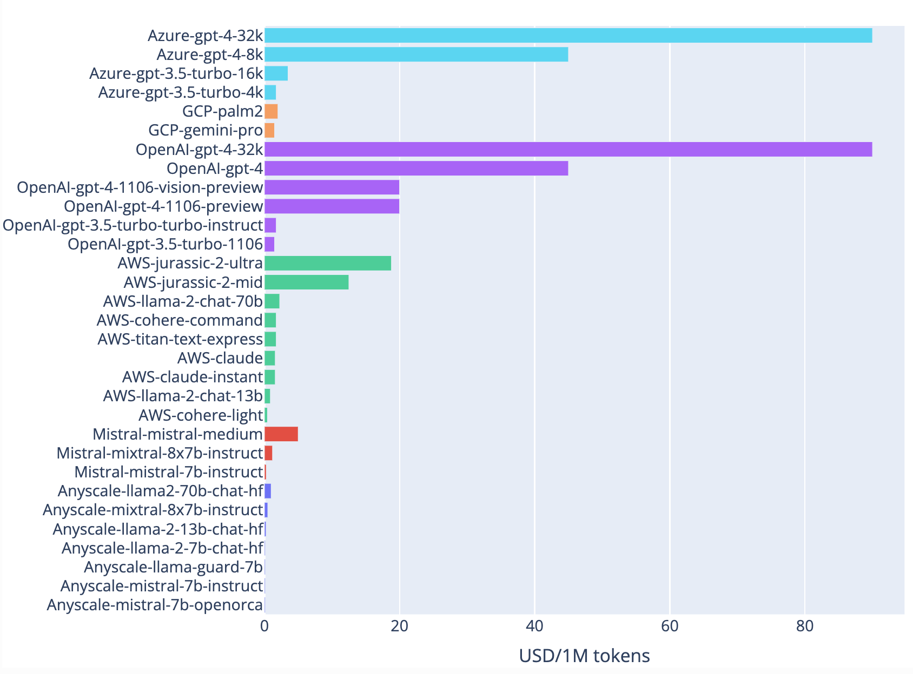

Paul Simmering
About
Blog
Projects
Talks
Blog
Categories
All
(15)
Advice
(3)
Cloud
(2)
Data Engineering
(1)
Data Visualization
(1)
Economics
(1)
Machine Learning
(7)
Productivity
(1)
Python
(6)
R
(2)
Tidy Tuesday
(1)
How to get gold standard data for NLP
Machine Learning
With the attention on new LLM releases, it’s easy to forget that correctly labeled examples are still a critical factor for accuracy in most NLP tasks. I think they’re the…
Mar 10, 2024
Paul Simmering

LLM Price Comparison
Machine Learning
Cloud
Economics
This is an overview of pricing for large language models from different developers and API providers. The dataset is available on GitHub. Prices are expressed in USD per 1…
Jan 11, 2024
Paul Simmering
The Grug Brained Data Scientist
Advice
The Grug Brained Developer is a funny essay on advice for software developers. The lessons resonated with me. This is my own version, geared towards data professionals.
Dec 9, 2023
Paul Simmering
NLP escalation ladder: Use the simplest NLP model that does the job
Machine Learning
Advice
With all the hype and breathtaking demos, it’s tempting to see LLMs as the universal tool for every language problem. And yes, GPT-4 in particular will achieve decent to…
Nov 12, 2023
Paul Simmering
Large language models for aspect-based sentiment analysis
Machine Learning
A finetuned GPT-3.5 Turbo model achieves state-of-the-art performance in aspect-based sentiment analysis (ABSA). Zero-shot and few-shot settings with GPT-4 and GPT-3.5 reach…
Nov 1, 2023
Paul Simmering
One-stop NLP: Multi-task prompts for LLMs
Machine Learning
Python
In NLP, we often want to extract multiple pieces of information from a text. Each extraction task is typically done by one model. For example, we might want to classify the…
Oct 29, 2023
Paul Simmering
Dataset Size vs. Label Correctness: What is more important for training a model?
Machine Learning
Python
Supervised models are trained on labeled data. The more data, the better the model. But what if the labels are wrong? How much does the quality of the labels matter compared…
Oct 28, 2023
Paul Simmering
Future Directions for Large Language Models
Machine Learning
Large language models (LLMs) have taken the world by storm in the last year. It’s not even been one year since ChatGPT was released, and we have seen countless applications…
Oct 21, 2023
Paul Simmering
A Critical Evaluation of Github Copilot and GPT-4 in a Data Science Workflow
Productivity
AI assistants like Github Copilot and ChatGPT promise breakthrough productivity improvements for developers. In this article, I’ll explore how these tools can be used in a…
Apr 10, 2023
Paul Simmering
Twitter API data collector with Modal
Python
Cloud
Data Engineering
In this article, I’ll show how to build a Twitter data collector in just 100 lines of code. Twitter data has many applications, from social science research to marketing…
Jan 26, 2023
Paul Simmering
Investing in data science skills for the long run
Advice
Data science is a field that is constantly evolving and requires a lot of practice to master. Picking the right skills to focus on is critical for career development.
Jan 9, 2023
Paul Simmering
Tidy Tuesday: analyzing yarns with polars
Python
Tidy Tuesday
In this article, I’m taking the Python data frame library polars for a spin. Polars is a super fast alternative to pandas, implemented in Rust. It also has a leaner…
Oct 22, 2022
Paul Simmering
FANGMANT: Tech stock analysis with pandas
Python
The acronym FANGMANT stands for Facebook, Apple, Netflix, Google, Microsoft, Amazon, Nvidia and Tesla. Large, highly profitable US tech companies that dominate their…
Dec 27, 2021
Paul Simmering
Data frame wars: Choosing a Python dataframe library as a dplyr user
R
Python
I’m a long time R user and lately I’ve seen more and more signals that it’s worth investing into Python. I use it for NLP with spaCy and to build functions on AWS Lambda.…
Dec 20, 2021
Paul Simmering
Exploring echarts4r
R
Data Visualization
As web-oriented presentation in R Markdown and Shiny becomes more and more popular, there is increasing demand for interactive graphics with R. Whereas ggplot2 and its vast…
Feb 8, 2020
Paul Simmering
No matching items